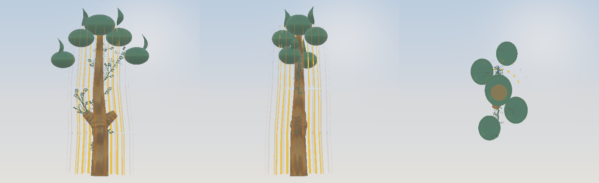
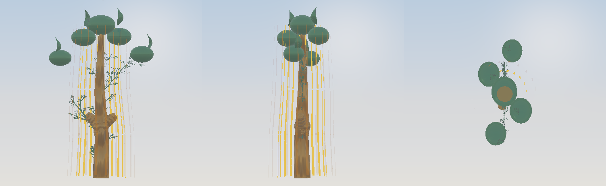
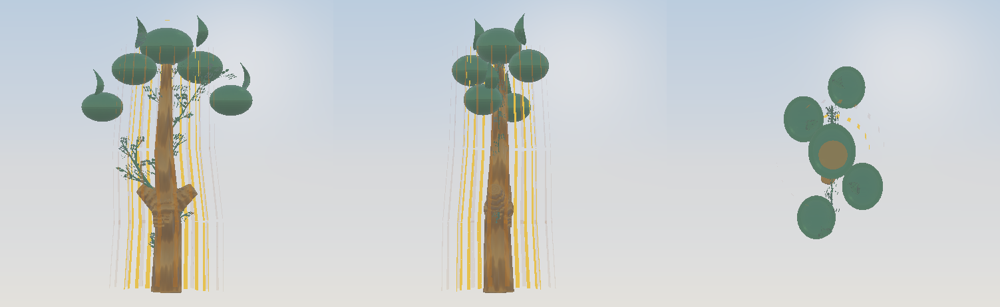
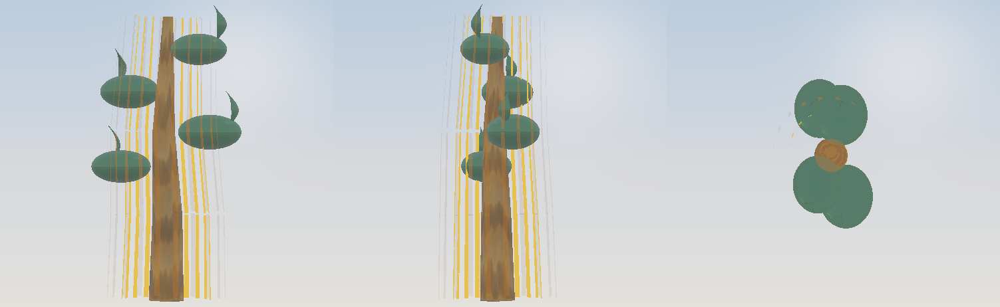

Bonsai Courtyard Tree
architecture/vegetation/treeA distinct bonsai courtyard tree building-landscape object with explicit support, irrigation or attachment semantics and object-local botanical geometry.
Evidence 80/100 · Visual match unmeasured
10 distinct grammar versions
A distinct bonsai courtyard tree building-landscape object with explicit support, irrigation or attachment semantics and object-local botanical geometry.
Evidence 80/100 · Visual match unmeasured

A distinct columnar entry tree building-landscape object with explicit support, irrigation or attachment semantics and object-local botanical geometry.
Evidence 80/100 · Visual match unmeasured

A broad, layered courtyard shade tree with a tapered trunk, explicit branch junctions, swept limbs, foliage lobes, and individually modeled leaves.
Evidence 100/100 · 99.90% recorded minimum

A distinct evergreen screen tree building-landscape object with explicit support, irrigation or attachment semantics and object-local botanical geometry.
Evidence 80/100 · Visual match unmeasured

A distinct flowering ornamental tree building-landscape object with explicit support, irrigation or attachment semantics and object-local botanical geometry.
Evidence 80/100 · Visual match unmeasured

A distinct multi-stem birch tree building-landscape object with explicit support, irrigation or attachment semantics and object-local botanical geometry.
Evidence 80/100 · Visual match unmeasured

A distinct olive courtyard tree building-landscape object with explicit support, irrigation or attachment semantics and object-local botanical geometry.
Evidence 80/100 · Visual match unmeasured

A distinct palm accent tree building-landscape object with explicit support, irrigation or attachment semantics and object-local botanical geometry.
Evidence 80/100 · Visual match unmeasured

A distinct rain garden canopy tree building-landscape object with explicit support, irrigation or attachment semantics and object-local botanical geometry.
Evidence 80/100 · Visual match unmeasured

A narrow architectural tree whose deterministic L-system crown is supported by a visible warm-timber trunk and clipped cloud foliage.
Evidence 100/100 · 99.80% recorded minimum